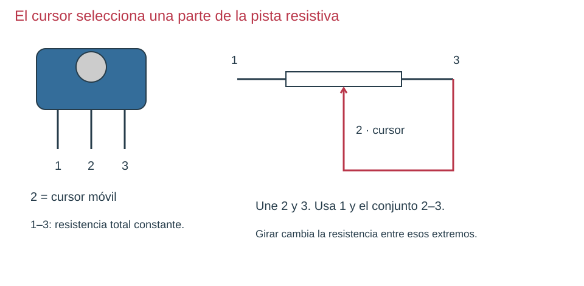
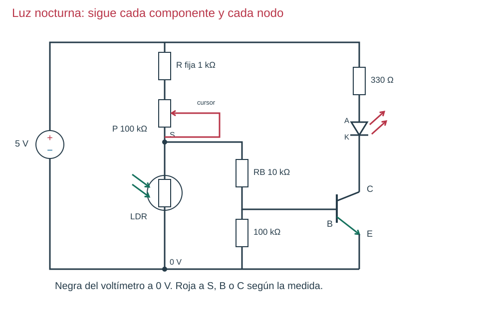

Contenido
Antes del detector: el potenciómetro
Un potenciómetro tiene una pista resistiva y un contacto móvil llamado cursor. Sus tres terminales son los dos extremos de la pista y el cursor. Entre extremos la resistencia total apenas cambia al girar; entre cursor y extremo cambia la porción de pista recorrida.

Para usarlo como resistencia ajustable, une el cursor a un extremo y usa ese conjunto y el extremo restante. Si el cursor pierde contacto momentáneamente, queda la pista completa en lugar de una rama totalmente abierta. Con el ohmímetro, comprueba que la resistencia entre los dos bornes elegidos cambia al girar. No asumas que la patilla central de cualquier encapsulado es el cursor sin comprobarlo.
Del mando manual a la luz
La LDR se coloca abajo. Al taparla aumenta su resistencia; S tiende a subir y proporciona más corriente de base. El LED puede aumentar su brillo gradualmente. No hemos construido un interruptor de umbral preciso.

Etapa 1 · comprobar el sensor y el ajuste
Con la LDR aislada y sin fuente, mide su resistencia iluminada y tapada. Anota ambos valores. Comprueba aparte el ajuste de 100 kΩ. El símbolo de la LDR incluye flechas de luz entrantes; no lo confundas con las salientes del LED.
Etapa 2 · construir solo el divisor
- Sin alimentar: + → resistencia fija 1 kΩ → potenciómetro 100 kΩ como resistencia ajustable → S → LDR → negativo.
- Deja la base desconectada. Roja del voltímetro a S; negra a 0 V.
- Alimenta, compara luz y oscuridad y gira lentamente. La resistencia fija impide que el tramo superior llegue a 0 Ω.
- Desconecta. Anota el ajuste antes de conectar la siguiente etapa.
Etapa 3 · comprobar la salida y unir
Verifica primero el transistor y el LED con mando manual, como en su capítulo. Después, sin alimentar, sustituye ese mando por S → 10 kΩ → B. Conserva 100 kΩ entre B/E y 330 Ω en serie con el LED. Al conectar la base, S ya tiene otro camino de corriente: no esperes la tensión calculada en vacío.
Etapa 4 · ajustar y comparar
- Empieza con resistencia de ajuste alta. Alimenta y alterna la condición iluminada y tapada.
- Gira poco a poco hasta observar diferencia. Repite sin cambiar nada más.
- Mide S y C respecto de 0 V en luz, sombra y oscuridad; mide VR de 330 Ω para calcular la corriente del LED.
- Describe «apagado», «tenue» o «más brillante» según observes; no inventes un encendido brusco.
| Observación | Comprobación útil | Razón |
|---|---|---|
| LED siempre apagado | Comprueba rama manual, E/B/C y luego S en luz/oscuridad. | Separa un fallo de salida de falta de mando. |
| Siempre brillante | Aumenta el ajuste superior y compara S. | Puede sobrar mando en ambas condiciones. |
| S cambia, LED apenas cambia | Mide caída en 10 kΩ y VCE. | La base disponible puede ser insuficiente o el transistor estar ya muy conducido. |
Ejemplo calculado, no ensayo físico: con 51 kΩ arriba y LDR oscura de 100 kΩ abajo, el divisor en vacío da 3,31 V. Con base conectada, RB = 10 kΩ, RBE = 100 kΩ y modelo VBE ≈ 0,7 V, S puede quedar cerca de 1,30 V. No es automáticamente un fallo: la base carga la salida. Los valores dependen del sensor y del transistor.
Ahora tú: explica antes de comprobar
¿Por qué medimos primero el divisor sin base y después conectado?
Solución razonada, sin cronómetro
La primera medida verifica el reparto entre resistencias; la segunda añade la carga de la base. Compararlas permite distinguir carga esperable de una conexión equivocada.
Aplicación autónoma · apartado 6.2
Predice el efecto de poner la LDR arriba y el ajuste abajo. Compruébalo primero en simulación. Registra tres condiciones, una medida por condición y una explicación de la transición; comunica a tu pareja qué prueba harías si no responde.
Comprueba y razona
Interpreta, decide y explica
Responde antes de abrir la explicación. Sin cronómetro; usa Tab y Entrar para desplegarla.
En el esquema LDR, localiza el cursor unido a un extremo. ¿Por qué no se dibuja el conjunto como una única caja de 1 kΩ?
Ver razonamiento
Porque existen dos piezas: una resistencia fija de protección y un potenciómetro de tres terminales configurado como ajuste. El cursor determina qué parte de pista se usa.
S disminuye al conectar la base. ¿Es prueba suficiente de un cable mal puesto?
Ver razonamiento
No; la base añade carga. Compara con el modelo cargado y verifica el retorno y las resistencias antes de diagnosticar.